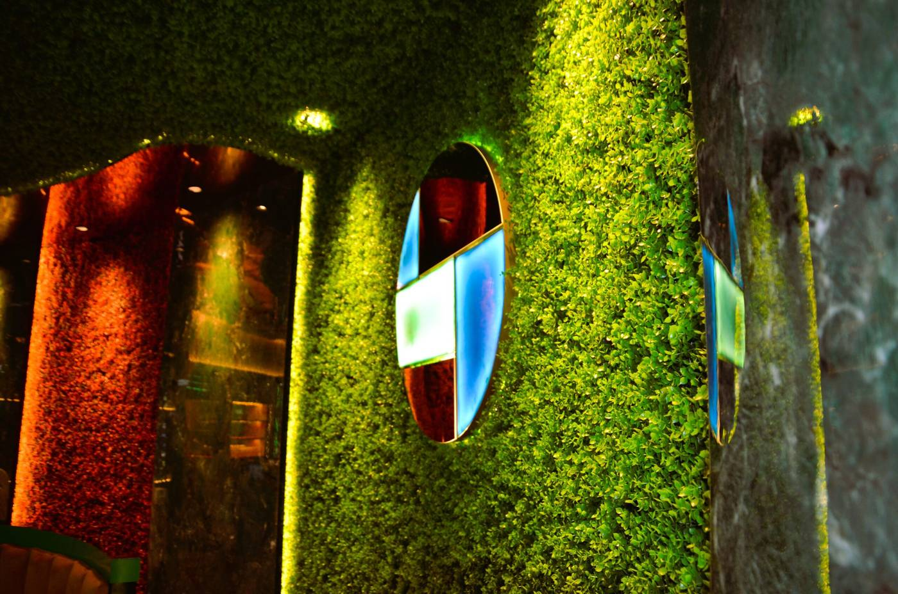
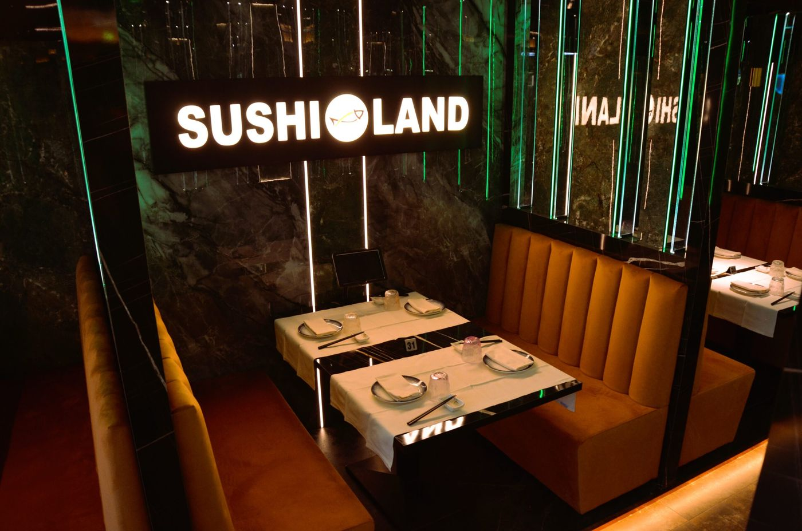

Sushi Land«Il paradiso del Sushi a Trento», in Via del Brennero dal 9 novembre 2017
All you can eat a pranzo e a cena, oppure il menù alla carta. Aperto tutti i giorni, il lunedì chiuso.
All you can eat tavolo n. ___
- Pranzodal martedì al venerdì€ 14,90
- Pranzosabato, domenica e festivi€ 18,90
- Cenatutti i giorni€ 27,90
- Bimbi fino a 95 cmgratis
- Bimbi da 95 a 130 cmpranzo (sabato e festivi € 9,00)€ 8,00
- Bimbi da 95 a 130 cmcena€ 14,90
- Coperto€ 2,00
Bevande e dolci esclusi. Si ordinano 6 piatti a testa per volta, e il giro dopo arriva dopo 10 minuti: «il cibo è vita, non sprecarlo».
Lunedì chiusoQuando siamo aperti
Oltre all'all you can eat c'è il menù alla carta, e per l'asporto il menù apposta. Per prenotare una cena o una festa si chiama il 0461 158 0027.
Si ordina coi numeri
Nel nostro menù ogni piatto ha il suo numero: il 30 è la zuppa miso, il 220 il sashimi di salmone. Tra sushi, piatti caldi, cucina cinese e italiana, ce n'è per tutti.
 05
05Carpaccio ricciola
 04
04Scampi al wasabi
 30
30Zuppa miso
 220
220Sashimi salmone
 221
221Sashimi tonno

Oltre 500 kg di pesce fresco e oltre 700 kg di riso ogni mese.
Tutti i piatti sono preparati al momento. In cucina lo staff è giapponese, o formato nelle brigate di cucina giapponese; in sala tanti ragazzi giovani e veloci, «ovviamente in perfetto italiano».
Al bar, oltre alle bibite, birre, alcolici e la birra giapponese.
Via del Brennero 111
38122 Trento
Tel. 0461 158 0027
sushilandtrento@gmail.com